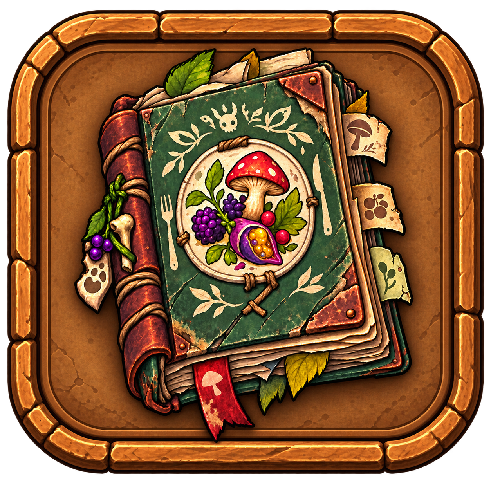
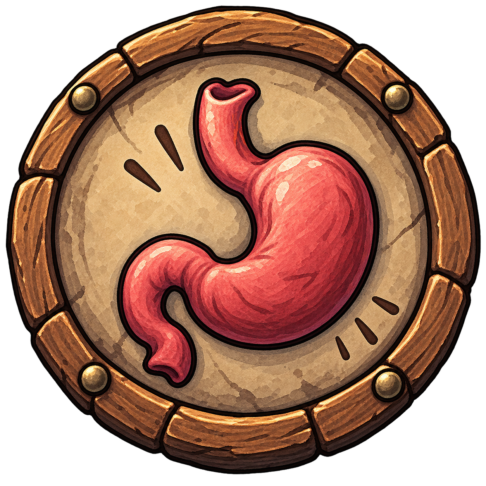
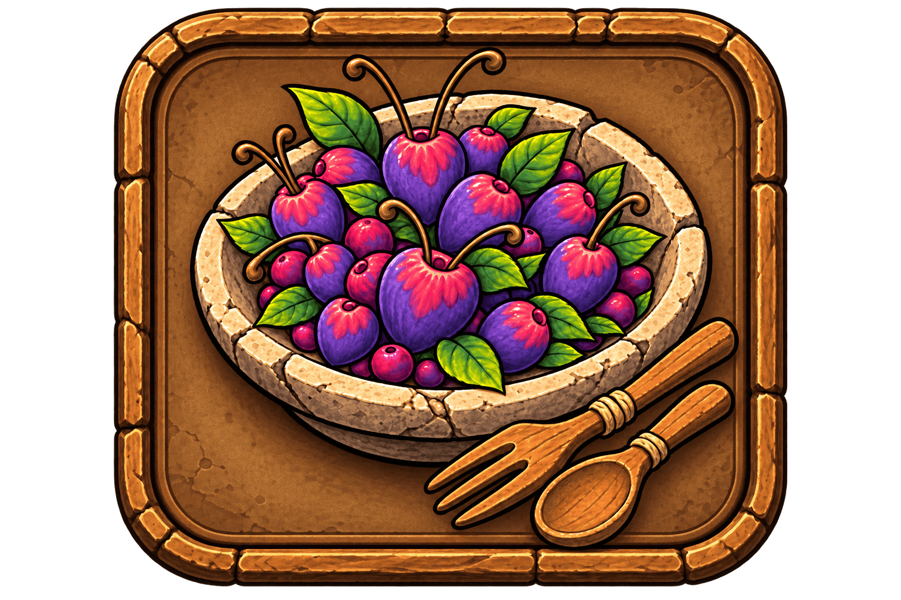
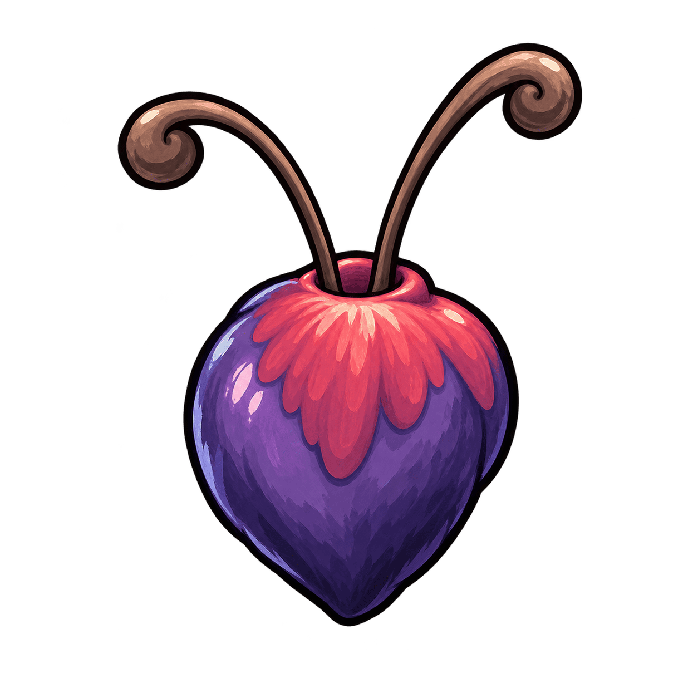
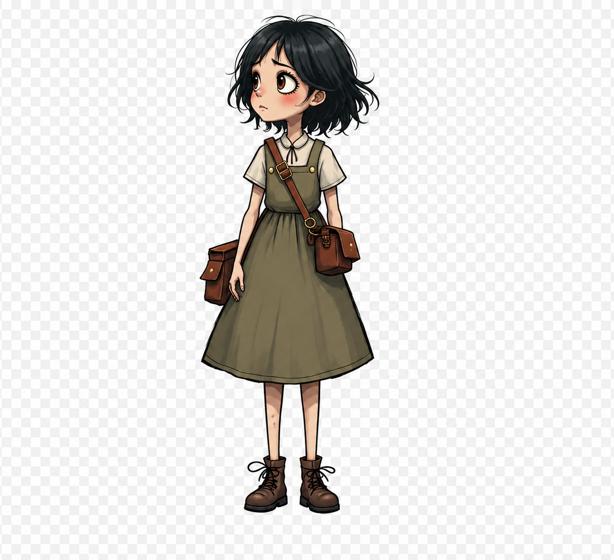

HEX SURVIVAL
ゲートを探して、生き延びろ。
START
Day
1

ゲート演出テスト

空腹度
ライフ


0

!
拠点施設
施設を選んで開発
探索ログ
消去
🧭 探索マップ
🏠 拠点に戻る
探索済みマスに隣接するマスを探索できます
探索先の確認
×
獲得予想
やめる
ここを探索する
施設
×
キャンセル
レベルアップ
食材図鑑
×
探索終了
見つけたもの
OK
タップして続ける